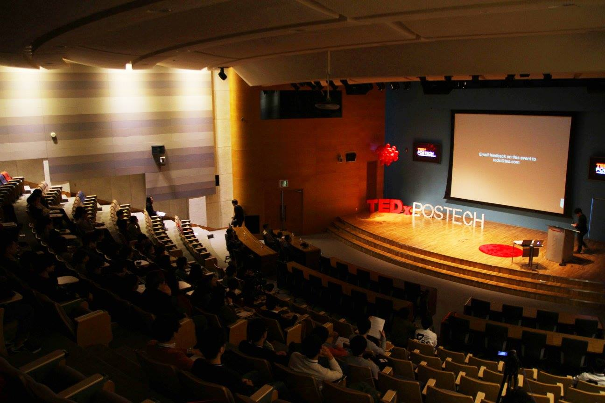

TEDxPOSTECH
My role: team building, sponsor and speaker contact, facilitating
Collaborator: Seewoo Lee, Jiwoo Kang, Beomsoo Lim, Jonggeon Lee, Sieun Park, Jaewon Yoo and Eunji Kwon
Pohang University of Science and Technology (POSTECH) has a difficulty in experiencing a variety of idea and people as located on Pohang. To overcome this difficulty, my team had gathered as the second organizer after 4 years of the first event.

Under theme 'question', event held in October 31, 2015 at POSCO International Conference Hall. POSTECH, Penta security system, A Twosome Place, Domino Pizza, Cafe Rio, PBS, Poapper, Ramen Beravo and Agit supported event as sponsors.
Human & Technology; Practicing Healthy Hybridity - Jintaek Kim
JinTaek Kim is a professor at POSTECH Department of Creative IT Engineering. He always reasons with body and sense and studies image, media arts and transhuman.
Disconnected Society, Connected People - Seoyoon Choi
SeoYoon Choi is editor of "Monthly Ingyeo" and participated as a writing staff in Hankyoreh 21, Sisa in Live, Hankook Newspaper, and Media Today.
How to Make Vision? - SeongJin Park
Seongjin Park is a professor at POSTECH department of Mechanical Engineering. He studies about micro manufacturing and multiscale simulation.
Why Human Seek for Unreachable Universe? - Jaechan Hwang
Jaechan Hwang is a professor at Kyeongpook National Universitiy department of Astronomy and Atmospheric Sciences. He has interest in cosmology, space biology and future of humanity
Can Science Conquer The Cancer? - Seungwoo Lee
SeungWoo Lee is a professor at POSTECH department of Integrative Biosciences and Biotechnology. He studies cancer treatment with human immune system.
Finding The Story Without Knowing The Words - Lena Park
Lena Park is a popular singer in Korea. She debuted at 1998 with her first album, 'piece', and released 8 albums after. She performs on various stages with her unique perspective and technique.